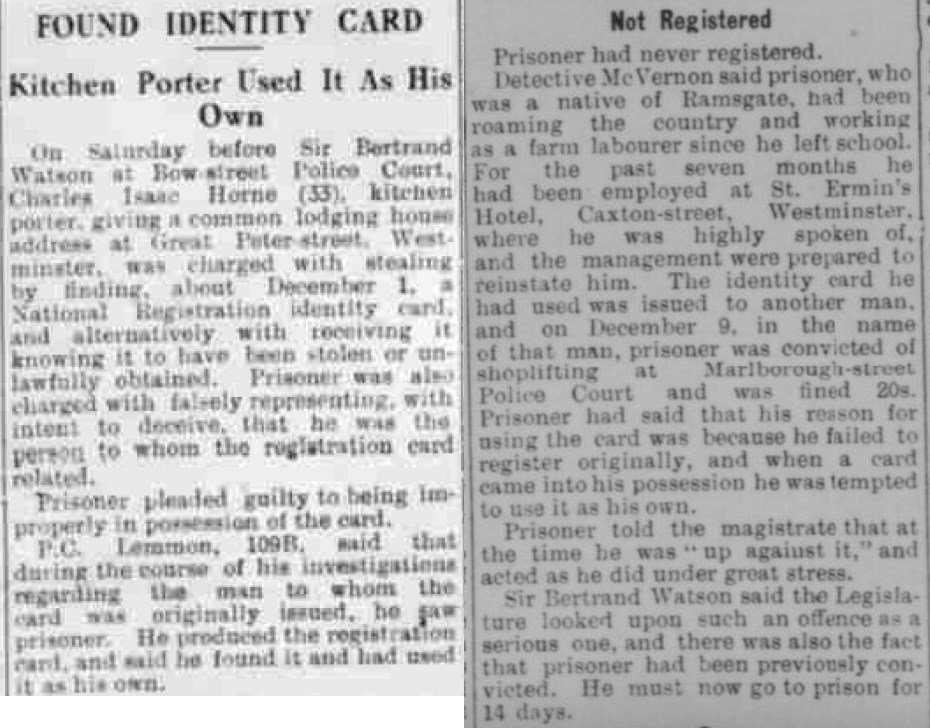
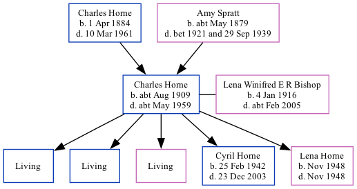

Charles Isaac Horne cAug 1909 - c1959
[ Home ] | [ Calendar ] | [ Surnames Index ] | [ Family History ]A kitchen porter and the child of Charles Horne (a market gardener worker) and Amy Spratt, Charles Horne, the first cousin once-removed on the father's side of <a href="I1.html">Nigel Horne</a>, was born in Haine, Kent, England <i>c.</i> Aug 1909<span class="citation">1,2,3</span> and married Lena Winifred E R Bishop (with whom he had 5 children: <a href="I992.html">Michael C</a>, <a href="I991.html">Bernard D</a>, <a href="I1380.html">Patricia B</a>, <a href="I1399.html">Cyril Francis</a> and <a href="I1383.html">Lena Winifred</a>, along with 3 surviving children) in Thanet, Kent, England around Nov 1934<span class="citation">5</span>.</p><p>Throughout his life, Charles lived in several places: at Walnut Tree Cottages, Haine in Thanet on Apr 2, 1911<span class="citation">7</span>; at Sacketts Hill Farm, St Peters in Thanet on Jun 19, 1921<span class="citation">8</span>; and at Great Peter Street, Westminster, London, England in 1942<span class="citation">6</span>. <p>He died <i>c.</i> May 1959 in West Ham, London<span class="citation">4</span>.
Parents
- Charles Henry was born on Apr 1, 1884
- Amy was born c. May 1879
Children
- Cyril Francis was born on Feb 25, 1942
- Lena Winifred was born in Nov 1948
Citations
- 1911 England Census Online publication - Provo, UT, USA: Ancestry.com Operations, Inc., 2011.Original data - Census Returns of England and Wales, 1911. Kew, Surrey, England: The National Archives of the UK (TNA), 1911. Data imaged from the National Archives, London, England.
- England & Wales births 1837-2006 - Findmypast
- England & Wales, FreeBMD Birth Index, 1837-1915 Online publication - Provo, UT, USA: The Generations Network, Inc., 2006.Original data - General Register Office. England and Wales Civil Registration Indexes. London, England: General Register Office. © Crown copyright. Published by permission of the Cont
- England & Wales deaths 1837-2007 - Findmypast
- England & Wales, Marriage Index: 1916-2005 Online publication - Provo, UT, USA: The Generations Network, Inc., 2009.Original data - General Register Office. England and Wales Civil Registration Indexes. London, England: General Register Office. © Crown copyright. Published by permission of the Cont
- Chelsea News and General Advertiser - 21 Aug 1942
- 1911 Census for England & Wales - Findmypast (was age 1 and the son of the head of the household)
- 1921 Census Of England & Wales - Findmypast (was age 11 and the son of the head of the household)
Media
Chelsea News and General Advertiser - 21 Aug 1942

England & Wales marriages 1837-2008 Transcription - BMD-M-1934-4-AZ-000109-053
England & Wales deaths 1837-2007 Transcription - BMD-D-1959-2-AZ-000467-111
England & Wales births 1837-2006 Transcription - BMD-B-1909-3-AZ-000288-182
England & Wales marriages 1837-2008 Transcription - BMD-M-1934-4-AZ-000622-041
1911 England, Wales - GBC-1911-RG14-04511-0115-3
1911 England, Wales & Scotland Census Transcription - GBC-1911-RG14-04511-0115-4
1921 Census of England & Wales - GBC/1921/RG15/04458/0431/03
Family Tree
Generated by Ged2Site. Last updated on Jul 20, 2025